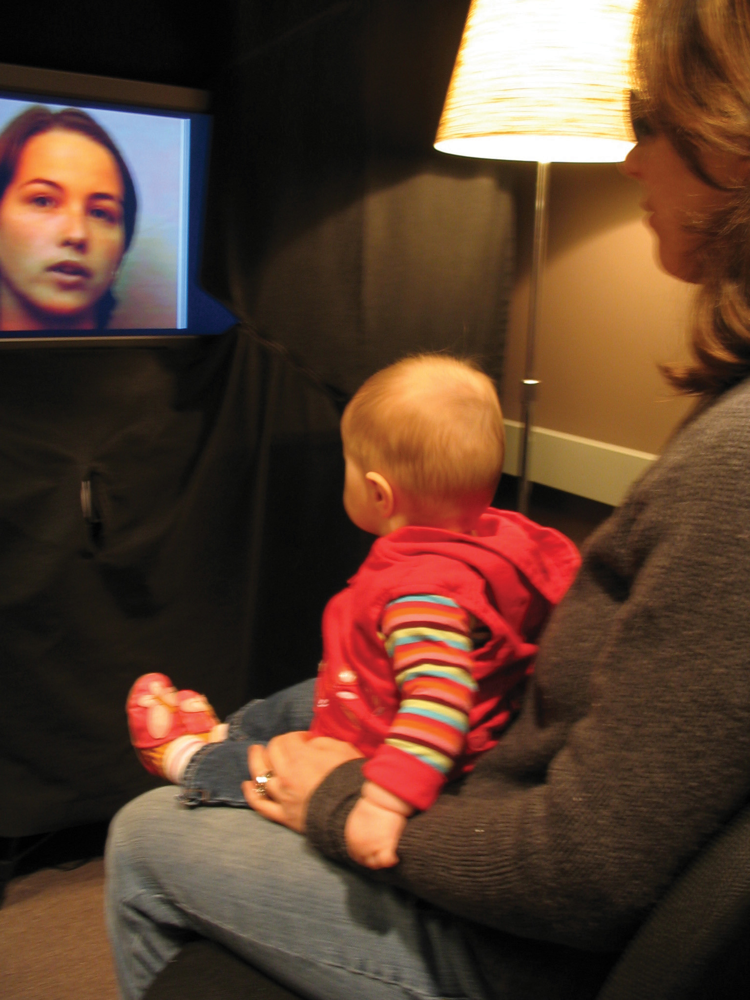
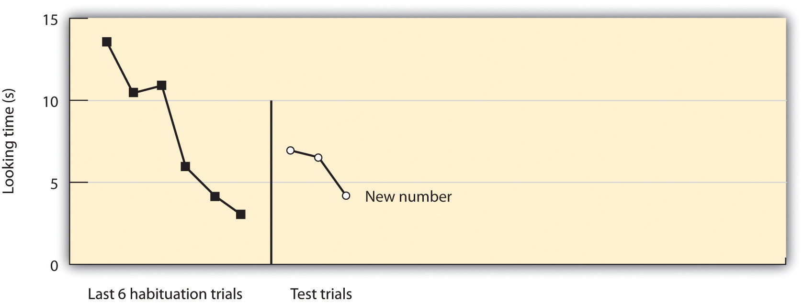
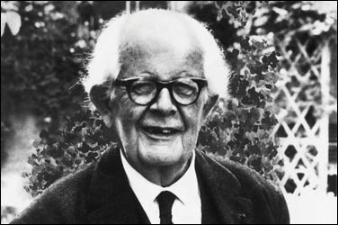
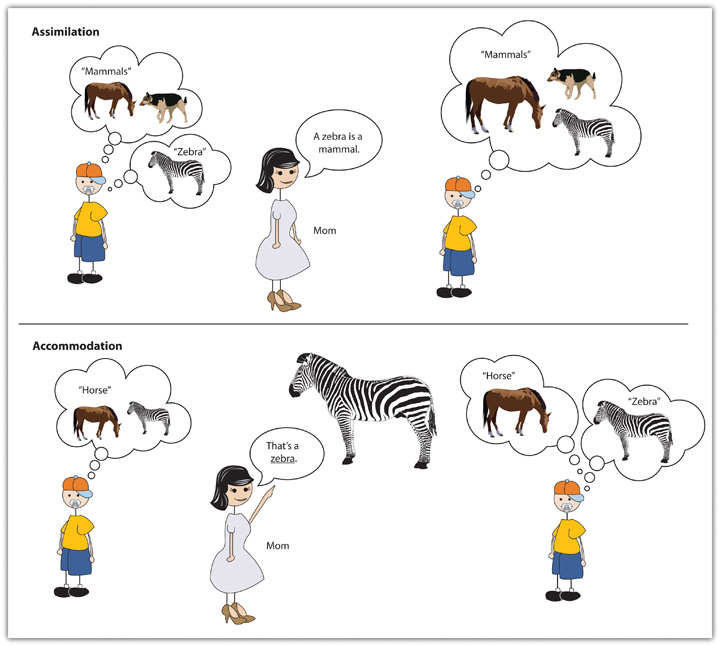
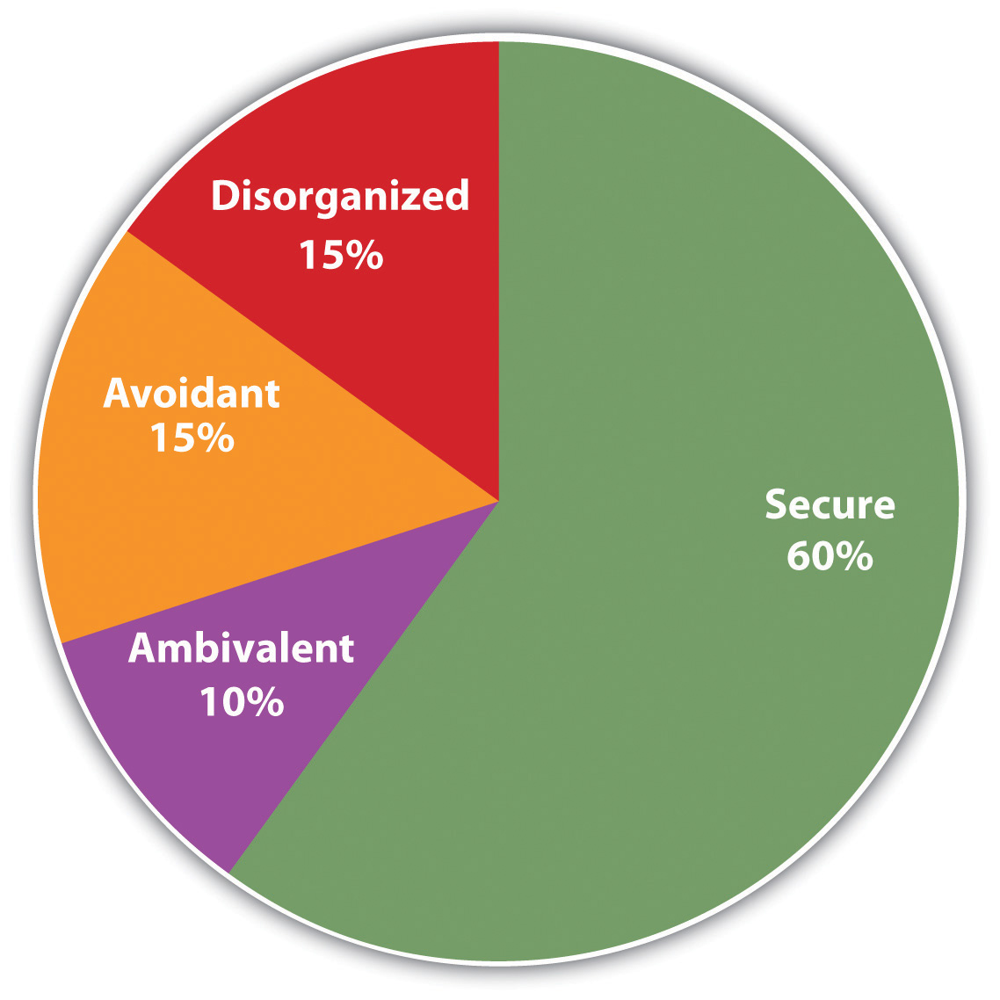

If all has gone well, a baby is born sometime around the 38th week of pregnancy. The fetus is responsible, at least in part, for its own birth because chemicals released by the developing fetal brain trigger the muscles in the mother’s uterus to start the rhythmic contractions of childbirth. The contractions are initially spaced at about 15-minute intervals but come more rapidly with time. When the contractions reach an interval of 2 to 3 minutes, the mother is requested to assist in the labor and help push the baby out.
Newborns are already prepared to face the new world they are about to experience. As you can see in Table 6.2 "Survival Reflexes in Newborns", babies are equipped with a variety of reflexes, each providing an ability that will help them survive their first few months of life as they continue to learn new routines to help them survive in and manipulate their environments.
Table 6.2 Survival Reflexes in Newborns
| Name | Stimulus | Response | Significance |
|---|---|---|---|
| Rooting reflex | The baby’s cheek is stroked. | The baby turns its head toward the stroking, opens its mouth, and tries to suck. | Ensures the infant’s feeding will be a reflexive habit |
| Blink reflex | A light is flashed in the baby’s eyes. | The baby closes both eyes. | Protects eyes from strong and potentially dangerous stimuli |
| Withdrawal reflex | A soft pinprick is applied to the sole of the baby’s foot. | The baby flexes the leg. | Keeps the exploring infant away from painful stimuli |
| Tonic neck reflex | The baby is laid down on its back. | The baby turns its head to one side and extends the arm on the same side. | Helps develop hand-eye coordination |
| Grasp reflex | An object is pressed into the palm of the baby. | The baby grasps the object pressed and can even hold its own weight for a brief period. | Helps in exploratory learning |
| Moro reflex | Loud noises or a sudden drop in height while holding the baby. | The baby extends arms and legs and quickly brings them in as if trying to grasp something. | Protects from falling; could have assisted infants in holding onto their mothers during rough traveling |
| Stepping reflex | The baby is suspended with bare feet just above a surface and is moved forward. | Baby makes stepping motions as if trying to walk. | Helps encourage motor development |
In addition to reflexes, newborns have preferences—they like sweet tasting foods at first, while becoming more open to salty items by 4 months of age (Beauchamp, Cowart, Menellia, & Marsh, 1994; Blass & Smith, 1992).Beauchamp, D. K., Cowart, B. J., Menellia, J. A., & Marsh, R. R. (1994). Infant salt taste: Developmental, methodological, and contextual factors. Developmental Psychology, 27, 353–365; Blass, E. M., & Smith, B. A. (1992). Differential effects of sucrose, fructose, glucose, and lactose on crying in 1- to 3-day-old human infants: Qualitative and quantitative considerations. Developmental Psychology, 28, 804–810. Newborns also prefer the smell of their mothers. An infant only 6 days old is significantly more likely to turn toward its own mother’s breast pad than to the breast pad of another baby’s mother (Porter, Makin, Davis, & Christensen, 1992),Porter, R. H., Makin, J. W., Davis, L. B., & Christensen, K. M. (1992). Breast-fed infants respond to olfactory cues from their own mother and unfamiliar lactating females. Infant Behavior & Development, 15(1), 85–93. and a newborn also shows a preference for the face of its own mother (Bushnell, Sai, & Mullin, 1989).Bushnell, I. W. R., Sai, F., & Mullin, J. T. (1989). Neonatal recognition of the mother’s face. British Journal of developmental psychology, 7, 3–15.
Although infants are born ready to engage in some activities, they also contribute to their own development through their own behaviors. The child’s knowledge and abilities increase as it babbles, talks, crawls, tastes, grasps, plays, and interacts with the objects in the environment (Gibson, Rosenzweig, & Porter, 1988; Gibson & Pick, 2000; Smith & Thelen, 2003).Gibson, E. J., Rosenzweig, M. R., & Porter, L. W. (1988). Exploratory behavior in the development of perceiving, acting, and the acquiring of knowledge. In Annual review of psychology (Vol. 39, pp. 1–41). Palo Alto, CA: Annual Reviews; Gibson, E. J., & Pick, A. D. (2000). An ecological approach to perceptual learning and development. New York, NY: Oxford University Press; Smith, L. B., & Thelen, E. (2003). Development as a dynamic system. Trends in Cognitive Sciences, 7(8), 343–348. Parents may help in this process by providing a variety of activities and experiences for the child. Research has found that animals raised in environments with more novel objects and that engage in a variety of stimulating activities have more brain synapses and larger cerebral cortexes, and they perform better on a variety of learning tasks compared with animals raised in more impoverished environments (Juraska, Henderson, & Müller, 1984).Juraska, J. M., Henderson, C., & Müller, J. (1984). Differential rearing experience, gender, and radial maze performance. Developmental Psychobiology, 17(3), 209–215. Similar effects are likely occurring in children who have opportunities to play, explore, and interact with their environments (Soska, Adolph, & Johnson, 2010).Soska, K. C., Adolph, K. E., & Johnson, S. P. (2010). Systems in development: Motor skill acquisition facilitates three-dimensional object completion. Developmental Psychology, 46(1), 129–138.
It may seem to you that babies have little ability to view, hear, understand, or remember the world around them. Indeed, the famous psychologist William James presumed that the newborn experiences a “blooming, buzzing confusion” (James, 1890, p. 462).James, W. (1890). The principles of psychology. New York, NY: Dover. And you may think that, even if babies do know more than James gave them credit for, it might not be possible to find out what they know. After all, infants can’t talk or respond to questions, so how would we ever find out? But over the past two decades, developmental psychologists have created new ways to determine what babies know, and they have found that they know much more than you, or William James, might have expected.
One way that we can learn about the cognitive development of babies is by measuring their behavior in response to the stimuli around them. For instance, some researchers have given babies the chance to control which shapes they get to see or which sounds they get to hear according to how hard they suck on a pacifier (Trehub & Rabinovitch, 1972).Trehub, S., & Rabinovitch, M. (1972). Auditory-linguistic sensitivity in early infancy. Developmental Psychology, 6(1), 74–77. The sucking behavior is used as a measure of the infants’ interest in the stimuli—the sounds or images they suck hardest in response to are the ones we can assume they prefer.
Another approach to understanding cognitive development by observing the behavior of infants is through the use of the habituation technique. HabituationDecreased responsiveness toward a stimulus after it has been presented numerous times in succession. refers to the decreased responsiveness toward a stimulus after it has been presented numerous times in succession. Organisms, including infants, tend to be more interested in things the first few times they experience them and become less interested in them with more frequent exposure. Developmental psychologists have used this general principle to help them understand what babies remember and understand.
In the habituation procedureA procedure that uses the principles of habituation to allow researchers to infer the cognitive processes of newborns., a baby is placed in a high chair and presented with visual stimuli while a video camera records the infant’s eye and face movements. When the experiment begins, a stimulus (e.g., the face of an adult) appears in the baby’s field of view, and the amount of time the baby looks at the face is recorded by the camera. Then the stimulus is removed for a few seconds before it appears again and the gaze is again measured. Over time, the baby starts to habituate to the face, such that each presentation elicits less gazing at the stimulus. Then, a new stimulus (e.g., the face of a different adult or the same face looking in a different direction) is presented, and the researchers observe whether the gaze time significantly increases. You can see that, if the infant’s gaze time increases when a new stimulus is presented, this indicates that the baby can differentiate the two stimuli.
Figure 6.2
The habituation procedure is used to assess the cognitive abilities of infants.
Source: Photo courtesy of Infant Studies Centre, Department of Psychology, University of British Columbia, http://infantstudies.psych.ubc.ca/research/publications/visual_lang_disc.
Although this procedure is very simple, it allows researchers to create variations that reveal a great deal about a newborn’s cognitive ability. The trick is simply to change the stimulus in controlled ways to see if the baby “notices the difference.” Research using the habituation procedure has found that babies can notice changes in colors, sounds, and even principles of numbers and physics. For instance, in one experiment reported by Karen Wynn (1995),Wynn, K. (1995). Infants possess a system of numerical knowledge. Current Directions in Psychological Science, 4, 172–176. 6-month-old babies were shown a presentation of a puppet that repeatedly jumped up and down either two or three times, resting for a couple of seconds between sequences (the length of time and the speed of the jumping were controlled). After the infants habituated to this display, the presentation was changed such that the puppet jumped a different number of times. As you can see in Figure 6.3 "Can Infants Do Math?", the infants’ gaze time increased when Wynn changed the presentation, suggesting that the infants could tell the difference between the number of jumps.
Figure 6.3 Can Infants Do Math?
Karen Wynn found that babies that had habituated to a puppet jumping either two or three times significantly increased their gaze when the puppet began to jump a different number of times.
Source: Adapted from Wynn, K. (1995). Infants possess a system of numerical knowledge. Current Directions in Psychological Science, 4, 172–176.
Childhood is a time in which changes occur quickly. The child is growing physically, and cognitive abilities are also developing. During this time the child learns to actively manipulate and control the environment, and is first exposed to the requirements of society, particularly the need to control the bladder and bowels. According to Erik Erikson, the challenges that the child must attain in childhood relate to the development of initiative, competence, and independence. Children need to learn to explore the world, to become self-reliant, and to make their own way in the environment.
Figure 6.4
Jean Piaget developed his theories of child development by observing the behaviors of children.
Source: Photo courtesy of mirjoran, http://www.flickr.com/photos/mirjoran/455878802.
These skills do not come overnight. Neurological changes during childhood provide children the ability to do some things at certain ages, and yet make it impossible for them to do other things. This fact was made apparent through the groundbreaking work of the Swiss psychologist Jean Piaget. During the 1920s, Piaget was administering intelligence tests to children in an attempt to determine the kinds of logical thinking that children were capable of. In the process of testing the children, Piaget became intrigued, not so much by the answers that the children got right, but more by the answers they got wrong. Piaget believed that the incorrect answers that the children gave were not mere shots in the dark but rather represented specific ways of thinking unique to the children’s developmental stage. Just as almost all babies learn to roll over before they learn to sit up by themselves, and learn to crawl before they learn to walk, Piaget believed that children gain their cognitive ability in a developmental order. These insights—that children at different ages think in fundamentally different ways—led to Piaget’s stage model of cognitive development.
Piaget argued that children do not just passively learn but also actively try to make sense of their worlds. He argued that, as they learn and mature, children develop schemasA pattern of knowledge in long-term memory that helps us organize information.—patterns of knowledge in long-term memory—that help them remember, organize, and respond to information. Furthermore, Piaget thought that when children experience new things, they attempt to reconcile the new knowledge with existing schemas. Piaget believed that the children use two distinct methods in doing so, methods that he called assimilation and accommodation (see Figure 6.5 "Assimilation and Accommodation").
Figure 6.5 Assimilation and Accommodation
When children employ assimilationThe use of an already developed schema to understand new information., they use already developed schemas to understand new information. If children have learned a schema for horses, then they may call the striped animal they see at the zoo a horse rather than a zebra. In this case, children fit the existing schema to the new information and label the new information with the existing knowledge. AccommodationThe change of an existing schema on the basis of new information., on the other hand, involves learning new information, and thus changing the schema. When a mother says, “No, honey, that’s a zebra, not a horse,” the child may adapt the schema to fit the new stimulus, learning that there are different types of four-legged animals, only one of which is a horse.
Piaget’s most important contribution to understanding cognitive development, and the fundamental aspect of his theory, was the idea that development occurs in unique and distinct stages, with each stage occurring at a specific time, in a sequential manner, and in a way that allows the child to think about the world using new capacities. Piaget’s stages of cognitive development are summarized in Table 6.3 "Piaget’s Stages of Cognitive Development".
Table 6.3 Piaget’s Stages of Cognitive Development
| Stage | Approximate age range | Characteristics | Stage attainments |
|---|---|---|---|
| Sensorimotor | Birth to about 2 years | The child experiences the world through the fundamental senses of seeing, hearing, touching, and tasting. | Object permanence |
| Preoperational | 2 to 7 years | Children acquire the ability to internally represent the world through language and mental imagery. They also start to see the world from other people’s perspectives. | Theory of mind; rapid increase in language ability |
| Concrete operational | 7 to 11 years | Children become able to think logically. They can increasingly perform operations on objects that are only imagined. | Conservation |
| Formal operational | 11 years to adulthood | Adolescents can think systematically, can reason about abstract concepts, and can understand ethics and scientific reasoning. | Abstract logic |
The first developmental stage for Piaget was the sensorimotor stageA stage of Piaget’s model of cognitive development, lasting from birth to age 2, in which the baby perceives the environment through the senses and motor skills., the cognitive stage that begins at birth and lasts until around the age of 2. It is defined by the direct physical interactions that babies have with the objects around them. During this stage, babies form their first schemas by using their primary senses—they stare at, listen to, reach for, hold, shake, and taste the things in their environments.
During the sensorimotor stage, babies’ use of their senses to perceive the world is so central to their understanding that whenever babies do not directly perceive objects, as far as they are concerned, the objects do not exist. Piaget found, for instance, that if he first interested babies in a toy and then covered the toy with a blanket, children who were younger than 6 months of age would act as if the toy had disappeared completely—they never tried to find it under the blanket but would nevertheless smile and reach for it when the blanket was removed. Piaget found that it was not until about 8 months that the children realized that the object was merely covered and not gone. Piaget used the term object permanenceThe ability to be aware of an object’s existence even when it is not visible. to refer to the child’s ability to know that an object exists even when the object cannot be perceived.
Children younger than about 8 months of age do not understand object permanence.
At about 2 years of age, and until about 7 years of age, children move into the preoperational stageA stage of Piaget’s cognitive development model, lasting from 2 to 7 years of age, in which children become capable of forming mental images.. During this stage, children begin to use language and to think more abstractly about objects, but their understanding is more intuitive and without much ability to deduce or reason. The thinking is preoperational, meaning that the child lacks the ability to operate on or transform objects mentally. In one study that showed the extent of this inability, Judy DeLoache (1987)DeLoache, J. S. (1987). Rapid change in the symbolic functioning of very young children. Science, 238(4833), 1556–1556. showed children a room within a small dollhouse. Inside the room, a small toy was visible behind a small couch. The researchers took the children to another lab room, which was an exact replica of the dollhouse room, but full-sized. When children who were 2.5 years old were asked to find the toy, they did not know where to look—they were simply unable to make the transition across the changes in room size. Three-year-old children, on the other hand, immediately looked for the toy behind the couch, demonstrating that they were improving their operational skills.
The inability of young children to view transitions also leads them to be egocentric—unable to readily see and understand other people’s viewpoints. Developmental psychologists define the theory of mindThe ability to take another person’s viewpoint. as the ability to take another person’s viewpoint, and the ability to do so increases rapidly during the preoperational stage. In one demonstration of the development of theory of mind, a researcher shows a child a video of another child (let’s call her Anna) putting a ball in a red box. Then Anna leaves the room, and the video shows that while she is gone, a researcher moves the ball from the red box into a blue box. As the video continues, Anna comes back into the room. The child is then asked to point to the box where Anna will probably look to find her ball. Children who are younger than 4 years of age typically are unable to understand that Anna does not know that the ball has been moved, and they predict that she will look for it in the blue box. After 4 years of age, however, children have developed a theory of mind—they realize that different people can have different viewpoints, and that (although she will be wrong) Anna will nevertheless think that the ball is still in the red box.
After about 7 years of age, the child moves into the concrete operational stageA stage of Piaget’s cognitive development model, between ages 7 to 11 years, in which children begin to use concepts of time, space, and numbers more accurately, and are able to use deductive or reversible reasoning., which is marked by more frequent and more accurate use of transitions, operations, and abstract concepts, including those of time, space, and numbers. An important milestone during the concrete operational stage is the development of conservationThe understanding that changes in the form of an object do not necessarily mean changes in the quantity of the object.—the understanding that changes in the form of an object do not necessarily mean changes in the quantity of the object. Children younger than 7 years generally think that a glass of milk that is tall holds more milk than a glass of milk that is shorter and wider, and they continue to believe this even when they see the same milk poured back and forth between the glasses. It appears that these children focus only on one dimension (in this case, the height of the glass) and ignore the other dimension (width). However, when children reach the concrete operational stage, their abilities to understand such transformations make them aware that, although the milk looks different in the different glasses, the amount must be the same.
Children younger than about 7 years of age do not understand the principles of conservation.
At about 11 years of age, children enter the formal operational stageA stage of Piaget’s cognitive development model, reached by children 11 years and older, in which they begin to think in abstract terms., which is marked by the ability to think in abstract terms and to use scientific and philosophical lines of thought. Children in the formal operational stage are better able to systematically test alternative ideas to determine their influences on outcomes. For instance, rather than haphazardly changing different aspects of a situation that allows no clear conclusions to be drawn, they systematically make changes in one thing at a time and observe what difference that particular change makes. They learn to use deductive reasoning, such as “if this, then that,” and they become capable of imagining situations that “might be,” rather than just those that actually exist.
Piaget’s theories have made a substantial and lasting contribution to developmental psychology. His contributions include the idea that children are not merely passive receptacles of information but rather actively engage in acquiring new knowledge and making sense of the world around them. This general idea has generated many other theories of cognitive development, each designed to help us better understand the development of the child’s information-processing skills (Klahr & McWinney, 1998; Shrager & Siegler, 1998).Klahr, D., & McWhinney, B. (1998). Information Processing. In D. Kuhn & R. S. Siegler (Eds.), Handbook of child psychology: Cognition, perception, & language (5th ed., Vol. 2, pp. 631–678). New York, NY: John Wiley & Sons; Shrager, J., & Siegler, R. S. (1998). SCADS: A model of children’s strategy choices and strategy discoveries. Psychological Science, 9, 405–422. Furthermore, the extensive research that Piaget’s theory has stimulated has generally supported his beliefs about the order in which cognition develops. Piaget’s work has also been applied in many domains—for instance, many teachers make use of Piaget’s stages to develop educational approaches aimed at the level children are developmentally prepared for (Driscoll, 1994; Levin, Siegler, & Druyan, 1990).Driscoll, M. P. (1994). Psychology of learning for instruction. Boston, MA: Allyn & Bacon; Levin, I., Siegler, S. R., & Druyan, S. (1990). Misconceptions on motion: Development and training effects. Child Development, 61, 1544–1556.
Over the years, Piagetian ideas have been refined. For instance, it is now believed that object permanence develops gradually, rather than more immediately, as a true stage model would predict, and that it can sometimes develop much earlier than Piaget expected. Renée Baillargeon and her colleagues (Baillargeon, 2004; Wang, Baillargeon, & Brueckner, 2004)Baillargeon, R. (2004). Infants’ physical world. Current Directions in Psychological Science, 13(3), 89–94; Wang, S. H., Baillargeon, R., & Brueckner, L. (2004). Young infants’ reasoning about hidden objects: Evidence from violation-of-expectation tasks with test trials only. Cognition, 93, 167–198. placed babies in a habituation setup, having them watch as an object was placed behind a screen, entirely hidden from view. The researchers then arranged for the object to reappear from behind another screen in a different place. Babies who saw this pattern of events looked longer at the display than did babies who witnessed the same object physically being moved between the screens. These data suggest that the babies were aware that the object still existed even though it was hidden behind the screen, and thus that they were displaying object permanence as early as 3 months of age, rather than the 8 months that Piaget predicted.
Another factor that might have surprised Piaget is the extent to which a child’s social surroundings influence learning. In some cases, children progress to new ways of thinking and retreat to old ones depending on the type of task they are performing, the circumstances they find themselves in, and the nature of the language used to instruct them (Courage & Howe, 2002).Courage, M. L., & Howe, M. L. (2002). From infant to child: The dynamics of cognitive change in the second year of life. Psychological Bulletin, 128(2), 250–276. And children in different cultures show somewhat different patterns of cognitive development. Dasen (1972)Dasen, P. R. (1972). Cross-cultural Piagetian research: A summary. Journal of Cross-Cultural Psychology, 3, 23–39. found that children in non-Western cultures moved to the next developmental stage about a year later than did children from Western cultures, and that level of schooling also influenced cognitive development. In short, Piaget’s theory probably understated the contribution of environmental factors to social development.
More recent theories (Cole, 1996; Rogoff, 1990; Tomasello, 1999),Cole, M. (1996). Culture in mind. Cambridge, MA: Harvard University Press; Rogoff, B. (1990). Apprenticeship in thinking: Cognitive development in social context. New York, NY: Oxford University Press; Tomasello, M. (1999). The cultural origins of human cognition. Cambridge, MA: Harvard University Press. based in large part on the sociocultural theory of the Russian scholar Lev Vygotsky (1962, 1978),Vygotsky, L. S. (1962). Thought and language. Cambridge, MA: MIT Press; Vygotsky, L. S. (1978). Mind in society. Cambridge, MA: Harvard University Press. argue that cognitive development is not isolated entirely within the child but occurs at least in part through social interactions. These scholars argue that children’s thinking develops through constant interactions with more competent others, including parents, peers, and teachers.
An extension of Vygotsky’s sociocultural theory is the idea of community learning, in which children serve as both teachers and learners. This approach is frequently used in classrooms to improve learning as well as to increase responsibility and respect for others. When children work cooperatively together in groups to learn material, they can help and support each other’s learning as well as learn about each other as individuals, thereby reducing prejudice (Aronson, Blaney, Stephan, Sikes, & Snapp, 1978; Brown, 1997).Aronson, E., Blaney, N., Stephan, C., Sikes, J., & Snapp, M. (1978). The jigsaw classroom. Beverly Hills, CA: Sage; Brown, A. L. (1997). Transforming schools into communities of thinking and learning about serious matters. American Psychologist, 52(4), 399–413.
It is through the remarkable increases in cognitive ability that children learn to interact with and understand their environments. But these cognitive skills are only part of the changes that are occurring during childhood. Equally crucial is the development of the child’s social skills—the ability to understand, predict, and create bonds with the other people in their environments.
One of the important milestones in a child’s social development is learning about his or her own self-existence. This self-awareness is known as consciousness, and the content of consciousness is known as the self-concept. The self-conceptA schema that contains knowledge about us, including our beliefs about our personality traits, physical characteristics, abilities, values, goals, and roles. is a knowledge representation or schema that contains knowledge about us, including our beliefs about our personality traits, physical characteristics, abilities, values, goals, and roles, as well as the knowledge that we exist as individuals (Kagan, 1991).Kagan, J. (1991). The theoretical utility of constructs of self. Developmental Review, 11, 244–250.
Some animals, including chimpanzees, orangutans, and perhaps dolphins, have at least a primitive sense of self (Boysen & Himes, 1999).Boysen, S. T., & Himes, G. T. (1999). Current issues and emerging theories in animal cognition. Annual Review of Psychology, 50, 683–705. In one study (Gallup, 1970),Gallup, G. G., Jr. (1970). Chimpanzees: Self-recognition. Science, 167(3914), 86–87. researchers painted a red dot on the foreheads of anesthetized chimpanzees and then placed each animal in a cage with a mirror. When the chimps woke up and looked in the mirror, they touched the dot on their faces, not the dot on the faces in the mirror. These actions suggest that the chimps understood that they were looking at themselves and not at other animals, and thus we can assume that they are able to realize that they exist as individuals. On the other hand, most other animals, including, for instance dogs, cats, and monkeys, never realize that it is they themselves in the mirror.
Infants who have a similar red dot painted on their foreheads recognize themselves in a mirror in the same way that the chimps do, and they do this by about 18 months of age (Povinelli, Landau, & Perilloux, 1996).Povinelli, D. J., Landau, K. R., & Perilloux, H. K. (1996). Self-recognition in young children using delayed versus live feedback: Evidence of a developmental asynchrony. Child Development, 67(4), 1540–1554. The child’s knowledge about the self continues to develop as the child grows. By age 2, the infant becomes aware of his or her sex, as a boy or a girl. By age 4, self-descriptions are likely to be based on physical features, such as hair color and possessions, and by about age 6, the child is able to understand basic emotions and the concepts of traits, being able to make statements such as, “I am a nice person” (Harter, 1998).Harter, S. (1998). The development of self-representations. In W. Damon & N. Eisenberg (Eds.), Handbook of child psychology: Social, emotional, & personality development (5th ed., Vol. 3, pp. 553–618). New York, NY: John Wiley & Sons.
Soon after children enter grade school (at about age 5 or 6), they begin to make comparisons with other children, a process known as social comparison. For example, a child might describe himself as being faster than one boy but slower than another (Moretti & Higgins, 1990).Moretti, M. M., & Higgins, E. T. (1990). The development of self-esteem vulnerabilities: Social and cognitive factors in developmental psychopathology. In R. J. Sternberg & J. Kolligian, Jr. (Eds.), Competence considered (pp. 286–314). New Haven, CT: Yale University Press. According to Erikson, the important component of this process is the development of competence and autonomy—the recognition of one’s own abilities relative to other children. And children increasingly show awareness of social situations—they understand that other people are looking at and judging them the same way that they are looking at and judging others (Doherty, 2009).Doherty, M. J. (2009). Theory of mind: How children understand others’ thoughts and feelings. New York, NY: Psychology Press.
One of the most important behaviors a child must learn is how to be accepted by others—the development of close and meaningful social relationships. The emotional bonds that we develop with those with whom we feel closest, and particularly the bonds that an infant develops with the mother or primary caregiver, are referred to as attachmentThe strong need of an infant to be close to the primary caregiver. (Cassidy & Shaver, 1999).Cassidy, J. E., & Shaver, P. R. E. (1999). Handbook of attachment: Theory, research, and clinical applications. New York, NY: Guilford Press.
As late as the 1930s, psychologists believed that children who were raised in institutions such as orphanages, and who received good physical care and proper nourishment, would develop normally, even if they had little interaction with their caretakers. But studies by the developmental psychologist John Bowlby (1953)Bowlby, J. (1953). Some pathological processes set in train by early mother-child separation. Journal of Mental Science, 99, 265–272. and others showed that these children did not develop normally—they were usually sickly, emotionally slow, and generally unmotivated. These observations helped make it clear that normal infant development requires successful attachment with a caretaker.
In one classic study showing the importance of attachment, Wisconsin University psychologists Harry and Margaret Harlow investigated the responses of young monkeys, separated from their biological mothers, to two surrogate mothers introduced to their cages. One—the wire mother—consisted of a round wooden head, a mesh of cold metal wires, and a bottle of milk from which the baby monkey could drink. The second mother was a foam-rubber form wrapped in a heated terry-cloth blanket. The Harlows found that, although the infant monkeys went to the wire mother for food, they overwhelmingly preferred and spent significantly more time with the warm terry-cloth mother that provided no food but did provide comfort (Harlow, 1958).Harlow, H. (1958). The nature of love. American Psychologist, 13, 573–685.
The studies by the Harlows showed that young monkeys preferred the warm mother that provided a secure base to the cold mother that provided food.
The Harlows’ studies confirmed that babies have social as well as physical needs. Both monkeys and human babies need a secure base that allows them to feel safe. From this base, they can gain the confidence they need to venture out and explore their worlds. Erikson (Table 6.1 "Challenges of Development as Proposed by Erik Erikson") was in agreement on the importance of a secure base, arguing that the most important goal of infancy was the development of a basic sense of trust in one’s caregivers.
Developmental psychologist Mary Ainsworth, a student of John Bowlby, was interested in studying the development of attachment in infants. Ainsworth created a laboratory test that measured an infant’s attachment to his or her parent. The test is called the strange situationA measure of attachment in young children in which the child’s behaviors are assessed in a situation in which the caregiver and a stranger move in and out of the environment. because it is conducted in a context that is unfamiliar to the child and therefore likely to heighten the child’s need for his or her parent (Ainsworth, Blehar, Waters, & Wall, 1978).Ainsworth, M. S., Blehar, M. C., Waters, E., & Wall, S. (1978). Patterns of attachment: A psychological study of the strange situation. Hillsdale, NJ: Lawrence Erlbaum Associates. During the procedure, which lasts about 20 minutes, the parent and the infant are first left alone, while the infant explores the room full of toys. Then a strange adult enters the room and talks for a minute to the parent, after which the parent leaves the room. The stranger stays with the infant for a few minutes, and then the parent again enters and the stranger leaves the room. During the entire session, a video camera records the child’s behaviors, which are later coded by trained coders.
In the strange situation, children are observed responding to the comings and goings of parents and unfamiliar adults in their environments.
On the basis of their behaviors, the children are categorized into one of four groups, where each group reflects a different kind of attachment relationship with the caregiver. A child with a secure attachment style usually explores freely while the mother is present and engages with the stranger. The child may be upset when the mother departs but is also happy to see the mother return. A child with an ambivalent (sometimes called insecure-resistant) attachment style is wary about the situation in general, particularly the stranger, and stays close or even clings to the mother rather than exploring the toys. When the mother leaves, the child is extremely distressed and is ambivalent when she returns. The child may rush to the mother but then fail to cling to her when she picks up the child. A child with an avoidant (sometimes called insecure-avoidant) attachment style will avoid or ignore the mother, showing little emotion when the mother departs or returns. The child may run away from the mother when she approaches. The child will not explore very much, regardless of who is there, and the stranger will not be treated much differently from the mother.
Finally, a child with a disorganized attachment style seems to have no consistent way of coping with the stress of the strange situation—the child may cry during the separation but avoid the mother when she returns, or the child may approach the mother but then freeze or fall to the floor. Although some cultural differences in attachment styles have been found (Rothbaum, Weisz, Pott, Miyake, & Morelli, 2000),Rothbaum, F., Weisz, J., Pott, M., Miyake, K., & Morelli, G. (2000). Attachment and culture: Security in the United States and Japan. American Psychologist, 55(10), 1093–1104. research has also found that the proportion of children who fall into each of the attachment categories is relatively constant across cultures (see Figure 6.8 "Proportion of Children With Different Attachment Styles").
Figure 6.8 Proportion of Children With Different Attachment Styles
The graph shows the approximate proportion of children who have each of the four attachment styles. These proportions are fairly constant across cultures.
You might wonder whether differences in attachment style are determined more by the child (nature) or more by the parents (nurture). Most developmental psychologists believe that socialization is primary, arguing that a child becomes securely attached when the mother is available and able to meet the needs of the child in a responsive and appropriate manner, but that the insecure styles occur when the mother is insensitive and responds inconsistently to the child’s needs. In a direct test of this idea, Dutch researcher Dymphna van den Boom (1994)van den Boom, D. C. (1994). The influence of temperament and mothering on attachment and exploration: An experimental manipulation of sensitive responsiveness among lower-class mothers with irritable infants. Child Development, 65(5), 1457–1476. randomly assigned some babies’ mothers to a training session in which they learned to better respond to their children’s needs. The research found that these mothers’ babies were more likely to show a secure attachment style in comparison to the mothers in a control group that did not receive training.
But the attachment behavior of the child is also likely influenced, at least in part, by temperamentThe innate personality characteristics of an infant., the innate personality characteristics of the infant. Some children are warm, friendly, and responsive, whereas others tend to be more irritable, less manageable, and difficult to console. These differences may also play a role in attachment (Gillath, Shaver, Baek, & Chun, 2008; Seifer, Schiller, Sameroff, Resnick, & Riordan, 1996).Gillath, O., Shaver, P. R., Baek, J.-M., & Chun, D. S. (2008). Genetic correlates of adult attachment style. Personality and Social Psychology Bulletin, 34(10), 1396–1405; Seifer, R., Schiller, M., Sameroff, A. J., Resnick, S., & Riordan, K. (1996). Attachment, maternal sensitivity, and infant temperament during the first year of life. Developmental Psychology, 32(1), 12–25. Taken together, it seems safe to say that attachment, like most other developmental processes, is affected by an interplay of genetic and socialization influences.
You might wonder whether the attachment style displayed by infants has much influence later in life. In fact, research has found that the attachment styles of children predict their emotions and their behaviors many years later (Cassidy & Shaver, 1999).Cassidy, J. E., & Shaver, P. R. E. (1999). Handbook of attachment: Theory, research, and clinical applications. New York, NY: Guilford Press. Psychologists have studied the persistence of attachment styles over time using longitudinal research designsResearch in which individuals are studied over an extended period of time, often over multiple developmental stages.—research designs in which individuals in the sample are followed and contacted over an extended period of time, often over multiple developmental stages.
In one such study, Waters, Merrick, Treboux, Crowell, and Albersheim (2000)Waters, E., Merrick, S., Treboux, D., Crowell, J., & Albersheim, L. (2000). Attachment security in infancy and early adulthood: A twenty-year longitudinal study. Child Development, 71(3), 684–689. examined the extent of stability and change in attachment patterns from infancy to early adulthood. In their research, 60 middle-class infants who had been tested in the strange situation at 1 year of age were recontacted 20 years later and interviewed using a measure of adult attachment. Waters and colleagues found that 72% of the infants received the same secure versus insecure attachment classification in early adulthood as they had received as infants. The adults who changed categorization (usually from secure to insecure) were primarily those who had experienced traumatic events, such as the death or divorce of parents, severe illnesses (contracted by the parents or the children themselves), or physical or sexual abuse by a family member.
In addition to finding that people generally display the same attachment style over time, longitudinal studies have also found that the attachment classification received in infancy (as assessed using the strange situation or other measures) predicts many childhood and adult behaviors. Securely attached infants have closer, more harmonious relationship with peers, are less anxious and aggressive, and are better able to understand others’ emotions than are those who were categorized as insecure as infants (Lucas-Thompson & Clarke-Stewart, (2007).Lucas-Thompson, R., & Clarke-Stewart, K. A. (2007). Forecasting friendship: How marital quality, maternal mood, and attachment security are linked to children’s peer relationships. Journal of Applied Developmental Psychology, 28(5–6), 499–514. And securely attached adolescents also have more positive peer and romantic relationships than their less securely attached counterparts (Carlson, Sroufe, & Egeland, 2004).Carlson, E. A., Sroufe, L. A., & Egeland, B. (2004). The construction of experience: A longitudinal study of representation and behavior. Child Development, 75(1), 66–83.
Conducting longitudinal research is a very difficult task, but one that has substantial rewards. When the sample is large enough and the time frame long enough, the potential findings of such a study can provide rich and important information about how people change over time and the causes of those changes. The drawbacks of longitudinal studies include the cost and the difficulty of finding a large sample that can be tracked accurately over time and the time (many years) that it takes to get the data. In addition, because the results are delayed over an extended period, the research questions posed at the beginning of the study may become less relevant over time as the research continues.
Cross-sectional research designs represent an alternative to longitudinal designs. In a cross-sectional research designA research design in which comparisons are made between samples of people at different ages., age comparisons are made between samples of different people at different ages at one time. In one example, Jang, Livesley, and Vernon (1996)Jang, K. L., Livesley, W. A., & Vernon, P. A. (1996). The genetic basis of personality at different ages: A cross-sectional twin study. Personality and Individual Differences, 21, 299–301. studied two groups of identical and nonidentical (fraternal) twins, one group in their 20s and the other group in their 50s, to determine the influence of genetics on personality. They found that genetics played a more significant role in the older group of twins, suggesting that genetics became more significant for personality in later adulthood.
Cross-sectional studies have a major advantage in that the scientist does not have to wait for years to pass to get results. On the other hand, the interpretation of the results in a cross-sectional study is not as clear as those from a longitudinal study, in which the same individuals are studied over time. Most important, the interpretations drawn from cross-sectional studies may be confounded by cohort effects. Cohort effectsRefers to the possibility that differences in cognition or behavior at two points in time may be caused by differences that are unrelated to the changes in age. The differences might instead be due to environmental factors that affect an entire age group. refer to the possibility that differences in cognition or behavior at two points in time may be caused by differences that are unrelated to the changes in age. The differences might instead be due to environmental factors that affect an entire age group. For instance, in the study by Jang, Livesley, and Vernon (1996)Jang, K. L., Livesley, W. A., & Vernon, P. A. (1996). The genetic basis of personality at different ages: A cross-sectional twin study. Personality and Individual Differences, 21, 299–301. that compared younger and older twins, cohort effects might be a problem. The two groups of adults necessarily grew up in different time periods, and they may have been differentially influenced by societal experiences, such as economic hardship, the presence of wars, or the introduction of new technology. As a result, it is difficult in cross-sectional studies such as this one to determine whether the differences between the groups (e.g., in terms of the relative roles of environment and genetics) are due to age or to other factors.